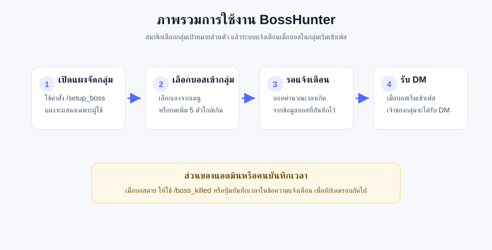
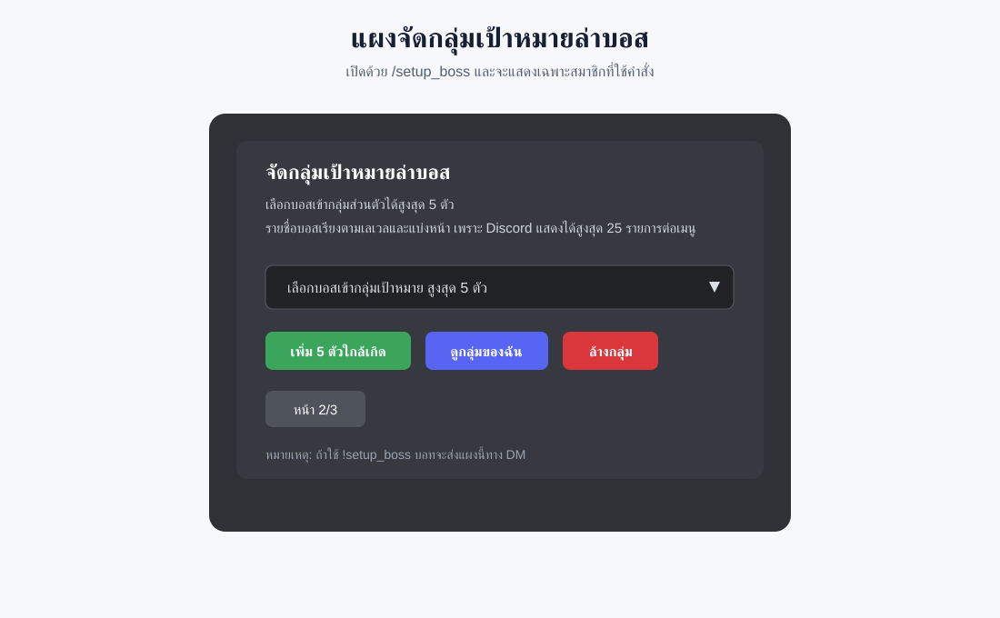
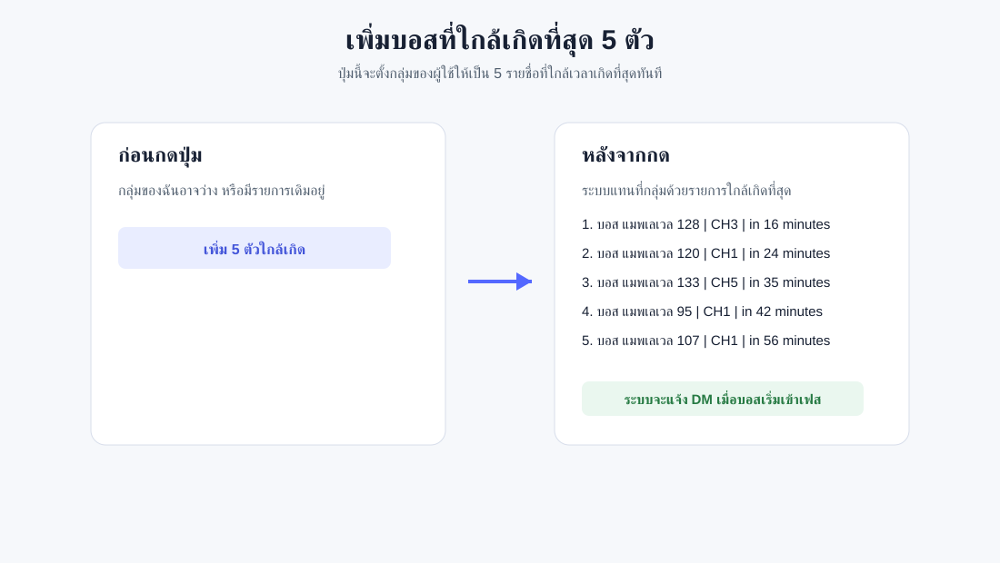
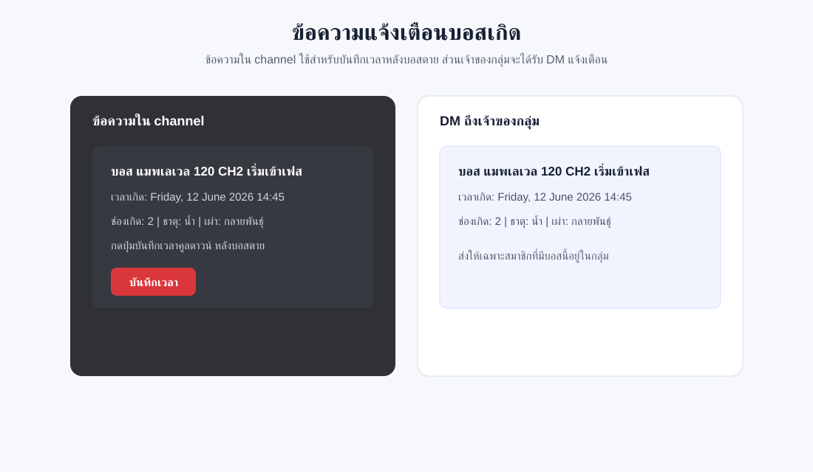
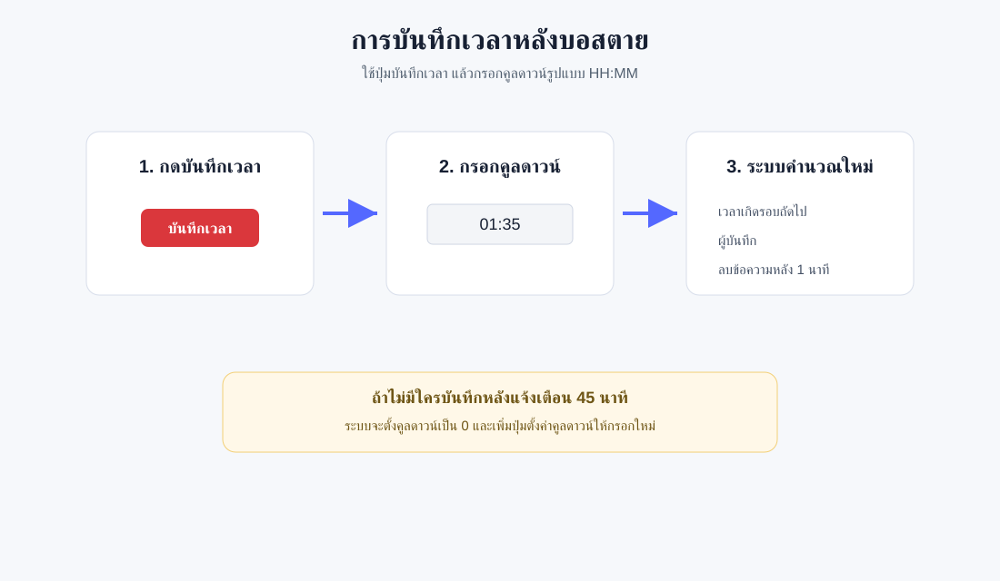
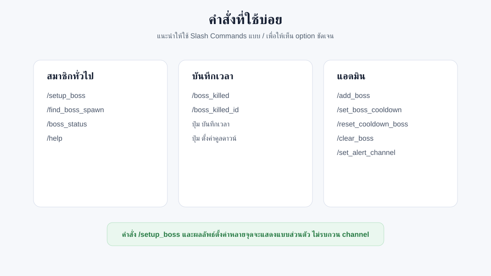

เวอร์ชันล่าสุดสำหรับระบบ BossHunter ที่รองรับ Austeja, Laima และ Jurate
คู่มือนี้สรุปการใช้งานสำหรับสมาชิกและแอดมิน พร้อมภาพประกอบและคำสั่งสำคัญ

bot.db ควรสำรองไฟล์นี้ก่อนอัปเดตหรือย้ายเครื่องAusteja, Laima, Jurate โดยค่าเริ่มต้นคือ Austeja
ใช้คำสั่งนี้เพื่อเปิดแผงจัดกลุ่มเป้าหมายล่าบอสแบบส่วนตัว:
/setup_boss server:Austeja /setup_boss server:Laima /setup_boss server:Jurate
ถ้าใช้คำสั่งแบบ prefix:
!setup_boss Austeja !setup_boss Jurate
ระบบจะส่งแผงไปทาง DM ของผู้ใช้คำสั่ง

/setup_bossเพิ่ม 5 ตัวใกล้เกิด จะเลือกบอสที่ใกล้เวลาเกิดที่สุด 5 ตัว
เมื่อถึงเวลาเกิด ระบบจะส่งข้อความใน channel ของ server นั้น เช่น:
⚠️ บอส แมพเลเวล 120 CH2 เริ่มเข้าเฟส (5 minutes ago) เวลาเกิด: Tuesday, 9 June 2026 14:45 Server: Jurate | ช่องเกิด: 2 | ธาตุ: น้ำ | เผ่า: กลายพันธุ์ กดปุ่มบันทึกเวลาคูลดาวน์ หลังบอสตาย [บันทึกเวลา]
หลังบันทึกเวลาแล้ว ระบบจะ:
ข้อความนี้กำลังจะถูกลบในอีก 1 นาทีถ้าแจ้งเตือนแล้วเกิน 45 นาทีแต่ยังไม่มีคนบันทึก ระบบจะตั้ง cooldown_minutes = 0 ให้บอสตัวนั้น และแสดงปุ่มตั้งค่าคูลดาวน์แทน

เวลาคูลดาวน์ใช้รูปแบบ HH:MM
ตัวอย่าง:
01:35 = 1 ชั่วโมง 35 นาที 00:45 = 45 นาที 02:00 = 2 ชั่วโมง 00:06 = 6 นาที
คำสั่งตั้งคูลดาวน์โดยตรง:
/set_boss_cooldown boss_id:boss_lv90_ch1_austeja countdown:01:35 !set_boss_cooldown boss_lv90_ch1_austeja 01:35
คำสั่งส่งข้อความให้ตั้งคูลดาวน์ของบอสที่ cooldown_minutes = 0:
/set_cooldown_boss server:Jurate page:1 !set_cooldown_boss Jurate 2
คำสั่งนี้ใช้ได้เฉพาะแอดมิน และส่งครั้งละ 10 รายการต่อหน้า

ดูตารางสถานะบอสเฉพาะ server:
/boss_status server:Austeja page:1 /boss_status server:Jurate page:2 !boss_status Jurate 2 !boss_status 2 Jurate
ดูรายละเอียดบอสจาก boss_id:
/boss_info boss_id:boss_lv80_ch1_austeja !boss_info boss_lv80_ch1_austeja
ดูบอสที่ใกล้เวลาเกิดที่สุด 5 ตัว:
/find_boss_spawn !find_boss_spawn
ผลลัพธ์ของคำสั่งดูข้อมูลจะแสดงแบบส่วนตัว หรือส่งทาง DM สำหรับคำสั่ง prefix
/help /setup_boss server:Austeja /boss_status server:Austeja page:1 /boss_info boss_id:boss_lv80_ch1_austeja /find_boss_spawn /boss_killed /boss_killed_id boss_id:boss_lv80_ch1_austeja
/add_boss boss_id:boss_lv100 cooldown_minutes:480 name:ชื่อบอส server:Austeja channel:CH-1 element:ไฟ race:มังกร /edit_boss boss_id:boss_lv100_ch1_austeja name:ชื่อใหม่ server:Austeja channel:CH-1 element:ไฟ race:มังกร cooldown_minutes:480 /delete_boss boss_id:boss_lv100_ch1_austeja /clear_boss boss_id:boss_lv80_ch1_austeja /set_alert_channel server:Jurate channel:#boss-jurate /reset_cooldown_boss /reset_cooldown_boss boss_id:boss_lv90_ch1_austeja /set_boss_cooldown boss_id:boss_lv90_ch1_austeja countdown:01:35 /set_cooldown_boss server:Jurate page:1
.env หรือ DISCORD_TOKEN ขึ้น GitHubbot.db เป็นประจำ เพราะเป็นฐานข้อมูลหลักของระบบsystemd หรือ process manager และตั้ง restart อัตโนมัติbot.log โตไม่หยุดset_cooldown_boss กับบอสจำนวนมาก ให้ใช้ page เพื่อลดการส่งข้อความจำนวนมากในครั้งเดียว